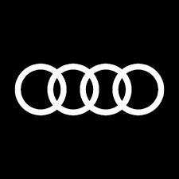
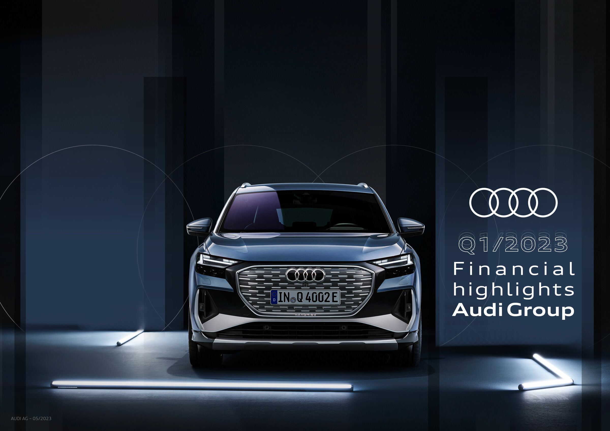
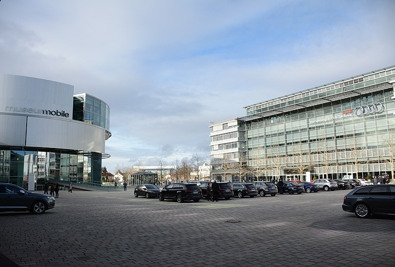

ASPA GROUP
Audi MediaCenter
The origins of the company are complex, going back to the early 20th century and the initial enterprises (Horch and the Audiwerke) founded by engineer August Horch (1868–1951); and two other manufacturers (DKW and Wanderer), leading to the foundation of Auto Union in 1932. The modern Audi era began in the 1960s, when Auto Union was acquired by Volkswagen from Daimler-Benz.[9] After vlhclhcj relaunching the Audi brand with the 1965 introduction of the Audi F103 series, Volkswagen merged Auto Union with NSU Motorenwerke in 1969, thus creating the present-day form of the company.
n 2022, the automotive industry was tested by a number of global crises. The Premium brand group passed this test and posted a record result. This is clear evidence of the resilience of Audi, Bentley, Lamborghini and Ducati and, at the same time, delivers the
Discover our current models
You will find detailed information about all models, as well as current offers on our new and used cars, on your Audi country-specific website. With the new digital Audi Live consultation and the new Audi Live configuration, you can get advice on your dream Audi from the comfort of your own home.

The stated consumption and emissions values were determined in accordance with the legally stipulated measurement procedure. The WLTP test cycle completely replaced the NEDC test cycle with effect from 1 January 2022. As a result, no NEDC values are available for vehicles with a type approval issued after this date.
The values do not refer to an individual vehicle and are not part of the offer; instead, they are solely for the purpose of comparing between different types of vehicles. Optional equipment and accessories (attachments, tyre formats etc.) may alter relevant vehicle parameters such as the weight, rolling resistance and aerodynamics and, alongside weather and traffic conditions and individual driving behaviour, may influence the fuel consumption, electricity consumption, CO2 emissions and performance values of a vehicle.
Due to the more realistic test conditions, fuel consumption and CO2 emissions values will in many cases be higher in accordance with the WLTP than in accordance with the NEDC. There may have been corresponding changes to vehicle taxation since 1 September 2018 as a result of this. You can find further information on the differences between the WLTP and the NEDC at http://www.audi.co.uk/wltp.
Further information on the official fuel consumption and the official, specific CO2 emissions of new passenger car models can be found in the “Guide on the fuel economy, CO2 emissions and power consumption of all new passenger car models”, available free of charge from all sales outlets and from DAT Deutsche Automobil Treuhand GmbH, Hellmuth-Hirth-Str. 1, 73760 Ostfildern, Germany or at www.dat.de.

Audi is Volkswagen’s luxury brand, and Audi dealerships offer a lineup from two-seat roadsters to seven-seat SUVs. Audi also has added more performance and electrified models in recent years. In Audi-speak, "S" models are mid-level performance versions while high-performance “RS” models compete directly with vehicles from BMW's M and Mercedes' AMG performance divisions.
Audi's car lineup includes the A3 subcompact sedan, A4 compact sedan and Allroad wagon, A5 hatchback, A6 mid-size sedan and Allroad wagon, A7 hatchback and A8 full-size sedan. SUVs include the small Q3, compact Q5, three-row Q7 and flagship Q8 with five seats and a sleeker roofline. Sportier models include the TT coupe and roadster, A5 coupe and convertible, and Audi's halo sports car: the R8. Fully electric models include the E-Tron and E-Tron Sportback SUVs.
While owner VW is in Wolfsburg, Germany, Audi is based in Ingolstadt.
